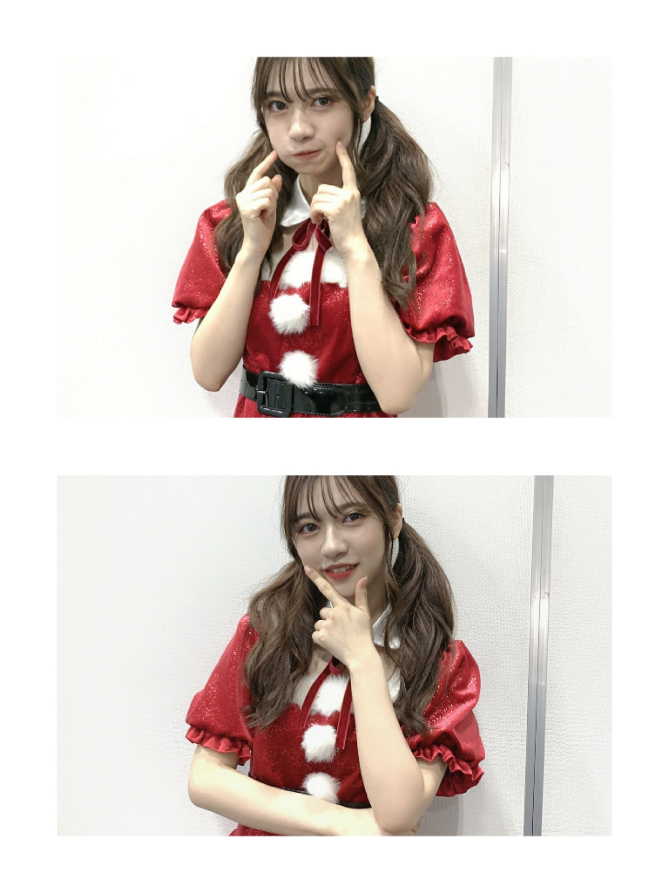
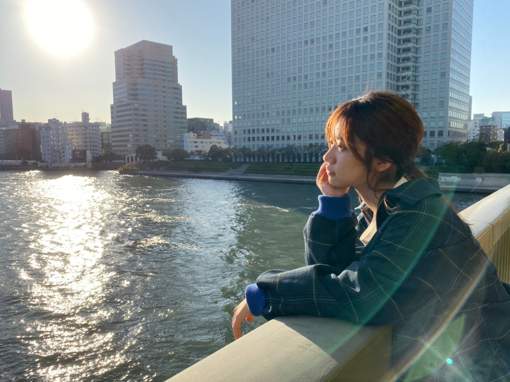
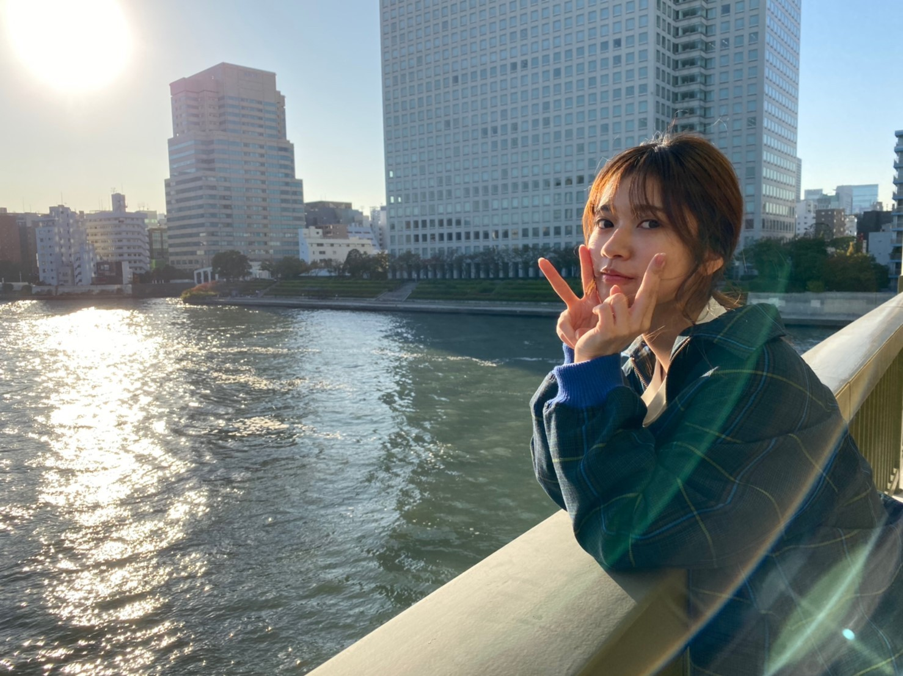
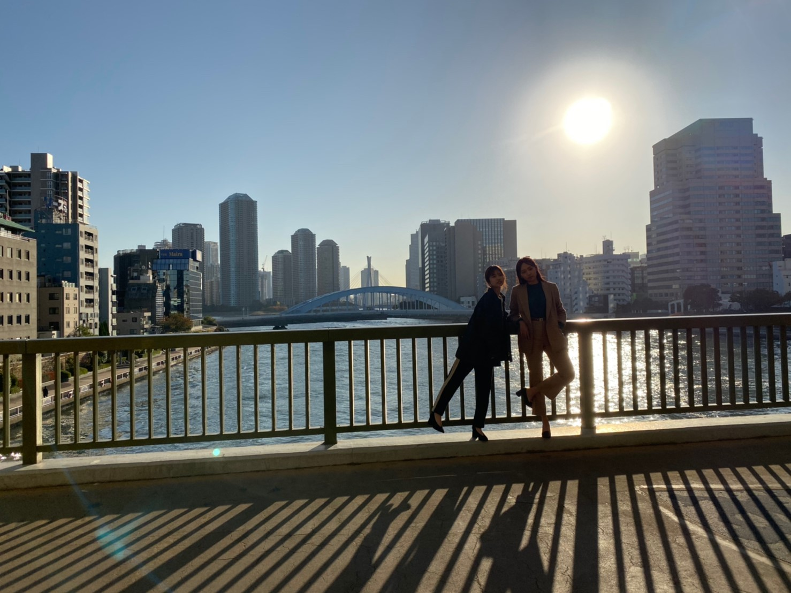

2019/1229Sun混ぜるな危険
朝のオレンジジュースは
少し特別な気分にさせてくれます。
だから、今日は1日が長いな
お仕事頑張ろうと気合い入れにオレンジジュースを飲んだりもします。
年末は風邪を引かないように
意識して栄養があるものを食べています。☺️
Mステの日は
みかんを1日に5つ食べました。
Mステありがとうございました。
そして、私の大好きな速攻元気
これは小学生？高学年くらいからお世話になっています
明治さんの商品で最近
ライブなどのケータリングに置いてあるのが幸せ嬉しいのです。
本当に昔からだいだいだい大好き
風邪引いてもこれを摂取すれば私は治ります。
今年も終わりだ
最後まで頑張りましょうね。☺️
まだ、クリスマス間に合う


雑誌や年末の歌番組も
チェック宜しくお願い致します！！
また、年内中に書けたら書きます！
2019/1217Tueイルミネーション

握手会2日間本当にありがとうございました！
皆さんも寒いなかお疲れ様でした
気を抜かず
風邪、インフルエンザ予防して
私達と一緒に楽しい年末を過ごしましょう！
毎日寒いですね。
それでも裸足が好きな私は
まだ、サンダルの割合の方が高いです。
楽です。☺️
裸足好きです。☺️
イルミネーション
ここ数年で街中にもイルミネーションが増えた気がします。
光って温かみがあっていいですよね
寒いけど心は少しほっこりします
オールナイトニッポンありがとうございました。
告知
ヤングマガジンさんにて
2期生の北野日奈子
私寺田蘭世
渡辺みり愛
３人で撮影してきました。
ニュータイプさん
今回は松村さんとです
いつも貴重な経験させてもらってます。
EX大衆さん
さゆりんご軍団での連載ページにて
これ凄くみて欲しいです
私が伊達にアイドルやってないと見せつけているので、、、！
意外と体力と力あるんです
ぜひ、紙面の方でチェック宜しくお願い致します。
宜しくお願い致します。☺️
がくたび
がくたびも解禁されたのかな
三重県にロケ行かせてもらってました。
私も放送が楽しみです。☺️
毎週ニュースがとまらんぜは更新されますので
こちらも宜しくお願い致します。
あと、のぎののも
高山さん
早川ちゃんと録ってきました。
お話盛り上がって何処が使われるのか使われないのか私達も気になる、、、
そしてずっと質問沢山頂いてたのですが
始めてブログでコスメ載せるかもです。

のぎおびのときに今日のメイク道具
デパートコスメ使ってないよーみたいなお話をして
教えてなかったので
あの日はこちらのリップを使ってました。
パッケージが可愛くて購入させていただきました☺️
最近はコスメはピンクが好きです。

風景。
2019/1210Tue身長は155㎝
11月は思ったよりもバタバターとさせていただけて嬉しかったです。
とても充実した月でした
有難うございました☺️
年末や年明けに解禁となる雑誌やら映像やら
お楽しみに！
公式サイトのスケジュールもチェックしてくださると嬉しいです☺️
握手会も沢山あった11月
本当に本当にありがとうございます。
寒くなってきて今年はインフルエンザの流行りも早いらしいので
沢山、人の集まる握手会やイベントではしっかりと予防宜しくお願い致します。
月刊エンタメさん
撮影凄く楽しかったです！



スタイリストさん
ヘアメイクさん
カメラマンさん
現場にいるスタッフさん皆さん
女性で
女の子の思う可愛いーーが沢山あってそれもまた幸せな現場でした。
カメラマンさんは
私の本格的な撮影を初めて担当してくださった方で
久々にお会いして
こうやって歳を重ねて成長を見てもらえるのって凄く嬉しいことですし
続けることの大切さを感じられる1日でした！
乃木撮の公式Twitterにて
色々な動画アップされていますが
蘭世さんはなかなかぶりっ子しないので動画撮影のとき楽しいですといじられて、、、
数秒の動画といえど
身を削ってわたくし頑張ってますので、、、！
応援してくれると嬉しいです
乃木撮も宜しくお願い致します
インフルエンサー久々に踊ったらやっぱり楽しかった！
体に染み付いてる感じが心地好かったです！
11月も沢山沢山ありがとうございました☺️
12月も既にスタートしてますが
何卒☺️